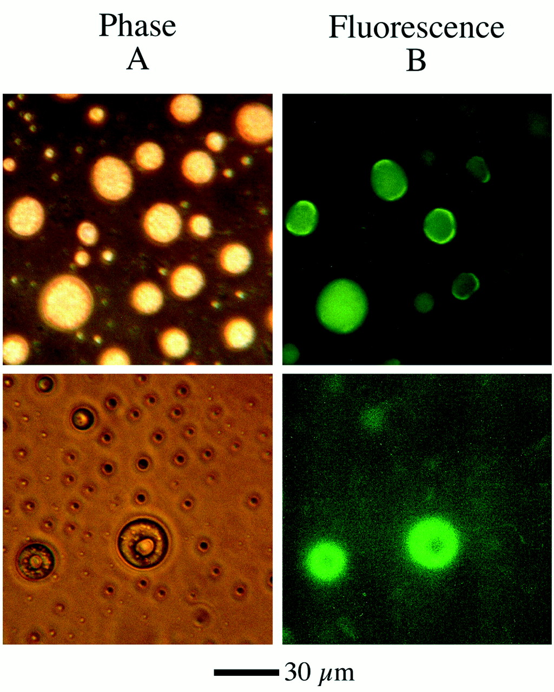

previous slide
--
Table of Contents
--
next slide
Wet
---Hard---
Soft
ALife
Artificial cells and giant unilamellar vesicles (GUVs)

Vesicles under phase/fluorescence (left/right) microscopy before/after 15 minutes of UV exposure (top/bottom). Figure 1 from
Dworkin et al.
2001
, NASA Ames.